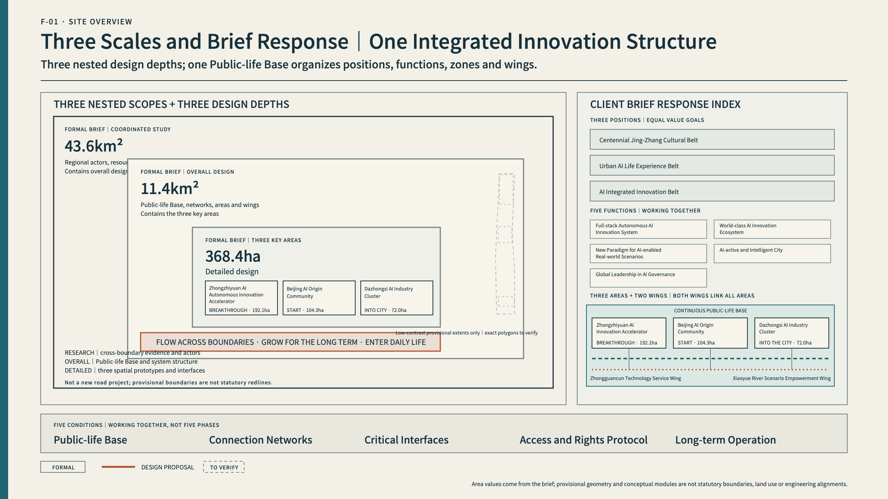
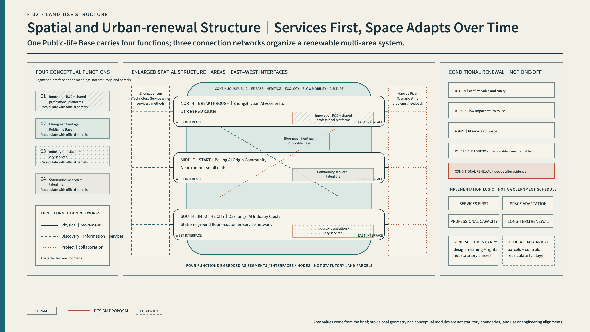
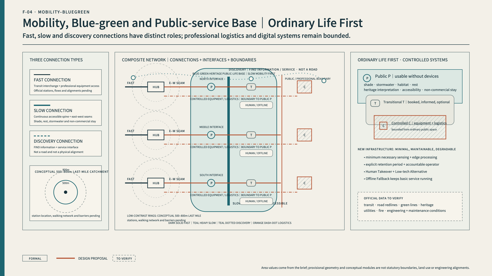
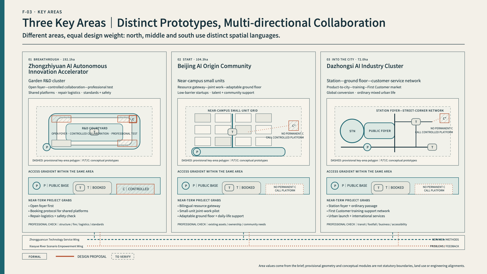
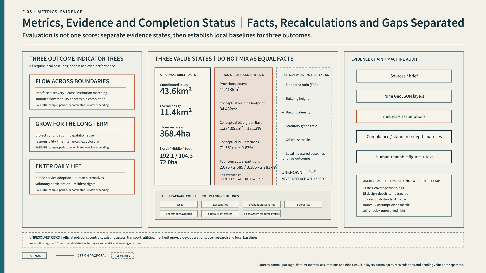

Flow across boundaries
Resources and partners cross institutional and spatial boundaries.
A public-life foundation helps innovation flow across boundaries, last through time, and enter everyday life.
Three outcomes, five interfaces, and public / transitional / controlled access work together; they are not a one-way sequence.
Resources and partners cross institutional and spatial boundaries.
Projects leave reusable capability, responsibility, and durable relationships.
Innovation improves real services while preserving choice and human alternatives.
The Chinese primary page visibly contains every mandatory review anchor.
Overview map; three scope levels; key areas; land-use zoning; traffic and walking; blue-green public space; buildings; renewal projects.
AI scenarios, core metrics, and requirement coverage remain auditable.
Self-check status, sources, and assumptions remain explicit.
The announced areas are formal brief facts. Current polygons are provisional and never substitute for statutory boundaries.

Land use, walking and traffic, blue-green public space, buildings and renewal projects, and AI scenario nodes are audited as separate layers.


Breakthrough, Start, and Enter the City are equal, multi-directional prototypes.



AI-assisted conceptual illustrations; not site photographs, existing-condition evidence, statutory plans, exact building designs, or implementation commitments.
Facts, provisional recalculations, concepts, data gaps, and future baselines remain visibly separate.

Required brief and Agent tasks are mapped to narrative, drawings, geometry, metrics, sources, assumptions, and checks.
SITE-PACKAGE / SOURCE-REGISTRY / PROCESSED-FACT-PACK / BOUNDARY-SOURCE / KEY-AREA-SOURCE / OFFICIAL-ANNOUNCEMENTOfficial controls, ownership, transport, utilities, heritage/ecology, operations, users, and baselines still require confirmation.
A-BOUNDARY-001 / A-CONTROLS-002 / A-EXISTING-003 / A-TRANSPORT-004 / A-MUNICIPAL-005